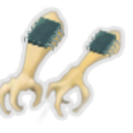
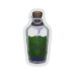
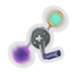
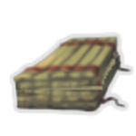
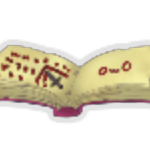
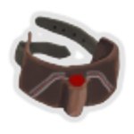
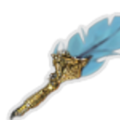
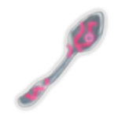

| Name | Image | Tier | Pool | Description | Flavor |
|---|
| Chemical Blood |  | Common | | Every time you lose HP equal to 25% of your max HP, gain a random potion. | Easily flammable. |
| Empty Skull |  | Common | | Whenever you play the last remaining card in your hand, shuffle an Inspiration into your draw pile. | The skull of a once great, empty-headed Philosopher. |
| Enhanced Actuators |  | Common | Blue | Gain 1Strength for every 2 orb slots. | Big actuators... equal big... gains? |
| Hidden Compartment |  | Common | | At the start of each combat, remove a card from your draw pile. The first time you shuffle your draw pile, add this card into your hand. | There is no shame in deception. |
| Pocket Mushroom | | Common | Marisa_color | The first time you take unblocked attack damage each combat, deal 12 damage back. | A Mushroom concealed in your skirt in case of danger. |
| Trusty Knives |  | Common | Silver | Whenever you lose a Knife, gain 1Protection. | It would be embarrassing if you were to cut yourself. |
| Vile Toxins |  | Common | Green | Poison deals 4 additional damage. | It bubbles menacingly. |
| Faulty Coupler |  | Uncommon | | Every 5th orb that is channeled will aspiration:Fuse with a copy of a currently channeled orb. | ... Loneliness is... the enemy... |
| Fetid Barrel |  | Uncommon | | Whenever you Exhaust a card, apply 1Poison to ALL enemies. | Even the tightly sealed interior cannot contain the pungent smell. |
| Frozen Jewel |  | Uncommon | | At the end of your turn, gain 2Block for every enemy that intends to attack. Gain Blur if there are multiple enemies and all intend to attack. | In your numb embrace, it pulses with comforting energy. |
| Hummingbird Heart |  | Uncommon | | For the first 2 turns of combat, receive 50% less damage from attacks. | A thousand beats a minute, the power of your heart is incredible but wanes fast. |
| Sea Salt Ice Cream |  | Uncommon | | Upon pickup, store a copy of one of your relics and obtain the relic you previously stored.Previously stored: Circlet | Bonds forged by the heart can never be broken. |
| Anachronic Snail Shell |  | Rare | | Store up to 6 unblocked damage taken from enemies until the end of your next turn. | This piece of a snail's shell resists the flow of time, tumbling along at its own paradoxical pace. |
| Hat of Infinite Power | | Rare | | During the first two turns of combat, all Powers are free. | It's brimming with energy as if powered by one thousand explosions! |
| Mysterious Core | | Rare | Blue | At the end of every even-numbered turn, Channel1 random orb. | Secondary systems have reported anamalous charge generation. Observation recommended. |
| Snecko Tail |  | Rare | | Whenever you play a poison-related card, apply 1Dizzy to the target(s). | The tail of a fearsome Snecko. The fluids it secretes are excellent for transferring your toxins. |
| The D6 |  | Rare | | Right click to activate.Reroll all Relic and Potion rewards in the current reward screen. Works 6 times. | Destiny, but a dice roll away. |
| Art of War (read) |  | Special | | If you do not play any Attacks during your turn, gain an additional [E] and attacks deal double damage next turn. | This ancient manuscript contains wisdom from a past age. You've taken it's teachings to heart. |
| Baby Byrd |  | Special | | Teach your little companion about your tools of trade and he'll repay you in kind.(It does something at the start of battle once you have amassed enough charges.) | For better or for worse, you've decided that this untainted creature deserves a better life. |
| Headhunter | | Special | | Gain Charges after killing a monster, gain a set of buffs at the start of battle depending on the amount of stored Charges. Visiting non-monster rooms makes Charges decay based on the type of room. Right-clicktoseemoreinformation. | A belt of severed heads, the first step on the path of exiling yourself from this place of the damned. |
| Lifesprig |  | Special | | Every time you play 3Attacks in a single turn, gain [E] next turn. | From the weakest slime to the strongest abomination, hostile life thrives in the spire. Maybe, so can you. |
| Nothing |  | Special | | Does nothing. | I told you so. |
| Ritual Stick |  | Special | | The first time you lose HP each combat, gain 1Ritual. | If only you could express yourself better. |
| Stabinomicon |  | Special | | Whenever you deal unblocked attack damage, apply 2GrievousπWounds to the target. | "How do you reach a heart? With a knife." - Blizzarre, runic archmagus |
| Bard's Skillbook | | Boss | | Each card you play may also bard:Queuebard:Notes. At the end of your turn, bard:Queue a [WildNote].Multiclass Bard | A notebook used as a book for notes. |
| Beaked's Skillbook |  | Boss | | At the start of each turn, if you only played attacks last turn, gain 1Strength and heal HP equal to your Strength.Multiclass Beaked | These religious texts depict the awakening of the "Chosen One" before devolving into nonesense. |
| Burster Core |  | Boss | | Replaces CrackedCore. Whenever an Orb is evoked by channeling with no empty slots, that Orb is evoked twice. | Goes off vigorously when filled to the brim. |
| Defect's Skillbook | | Boss | | At the start of each combat, gain 2 Orb slots and Channel that many random Orbs. Whenever you play a Power,Channel a random Orb at the start of your turn for 3 turns.Multiclass Defect | Pages upon pages filled with meticulously written 1s and 0s, what could this mean? |
| Future Diary |  | Boss | | Gain [E] at the start of each turn. At the start of each turn a random card in your hand is picked. You cannot play other cards while that card is in your hand. | It's hard to live in the present if your future is in your hand. |
| Ironclad's Skillbook |  | Boss | | Before the start of your turn, if you have Block, gain 1Strength. At the end of combat, heal 4 HP.Multiclass Ironclad | An abused book that contains the hasty scribbles of an angry being. |
| Mageblood |  | Boss | | You cannot use potions. You cannot have rare potions. At the start of combat, gain all your potion effects. | Rivers of power course through your veins. |
| Marisa's Skillbook |  | Boss | | Whenever you play a card, gain Charge-up equal to its cost+#b1.Multiclass Marisa | A handwritten tome written by an ordinary, human witch. She must like mushrooms. |
| Mechanical Eye | | Boss | | At the start of the first 3 turns each combat, put a card from your draw pile into your hand. | 20/20 Hindsight. |
| Mobile Forge |  | Boss | | Whenever you play an upgraded card, runesmith:Enhance a random card in your hand. Whenever you play an enhanced card, Upgrade a random card in your hand. | A pet-like machine that started to follow you on your journey. |
| Poet's Pen |  | Boss | | Whenever you play an Attack, play the top card of your draw pile if it's an Attack, otherwise discard it. | In every piece of prose, lies a tiny spark of magic. With this tool, you may craft beauty even on this most dreary of canvasses. |
| Poet's Pen |  | Boss | | Whenever you play an Attack, play the top card of your draw pile. Start combat with 6 stacks of Weak,Frail and Vulnerable on you, reduced by Experience. | In every piece of prose, lies a tiny spark of magic. With this tool, you may craft beauty even on this most dreary of canvasses. |
| Random Nob Generator |  | Boss | | Gain [E] [E] at the start of each turn. At the start of each combat, spawn a GremlinNob40% of the time. | We spent so much time to see if we could, we didn't think about if we should. |
| Ritual Dagger |  | Boss | | Lose 3 HP at the start of your turn. When you would die in combat, heal to your Max HP instead and gain permanently Awoken (works once). | With every move you make, you feel the dagger dig in deeper into your being. You fear what you may become if you give in. |
| Runesmith's Skillbook |  | Boss | | The first time you play an Attack each turn, for each prior turn ended without playing an Attack,runesmith:Enhance that many random cards in your hand that amount of times.Multiclass Runesmith | This seems to be a beginners guide to arcane forgery. The hammer section has been taken special care of. |
| Runic Spoon |  | Boss | | In each combat, add a copy of every 3rd card you manually play into your hand, it costs 1 more until played. | Maybe you could read the runes if the spoon didn't wiggle around so much. |
| Secret Technique Scroll |  | Boss | | At the start of your turn, draw 1 additional card. Whenever you shuffle your discard pile, add 3 random cards to your draw pile. They cost 0 until played. | "Promise me you'll never use these" - Teacher |
| Servant's Skillbook | | Boss | | At the start of each turn, if you took no HP damage last turn, gain 3Sattelites. Whenever a Sattelite is used, gain Protection equal to its damage.Multiclass Servant | An elegant list on how to clean a... mansion? graces these pages. |
| Silent's Skillbook |  | Boss | | Whenever you play 4 or more cards on your turn, at the start of your next turn, discard any number of cards then draw that many.Multiclass Silent | Pages filled with information on how to deal with this place. A talk with the author should be enlightening. |
| Stellarator |  | Boss | | The first time each turn when channeling an orb fills your orb slots, aspiration:Fuse all orbs. | Who needs the Inserter if you can just squeeze! |
| Watcher's Skillbook | | Boss | | Whenever you play an Attack and then a Skill or vice versa, gain 1Mantra.Multiclass Watcher | These pages just seem to have a bunch of random indentations... |
| Earplugs |  | Shop | Bard_color | Whenever you would gain bard:Inspiration, apply 1Weak and Vulnerable for every 25 inspiration to a random enemy instead. | Faith in ones skills is always useful in one way or another. |
| Kaom's Heart |  | Shop | | Raise your Max HP by 100 and becomeunabletoobtainnewrelicsFORTHEENTIRERUN. | The warrior who fears, will fail. Never look back. Never stop. Never surrender. |
| Nostalgia |  | Shop | | Upon pickup, obtain a random StarterRelic. | Take heart in the memory of those that came before. |